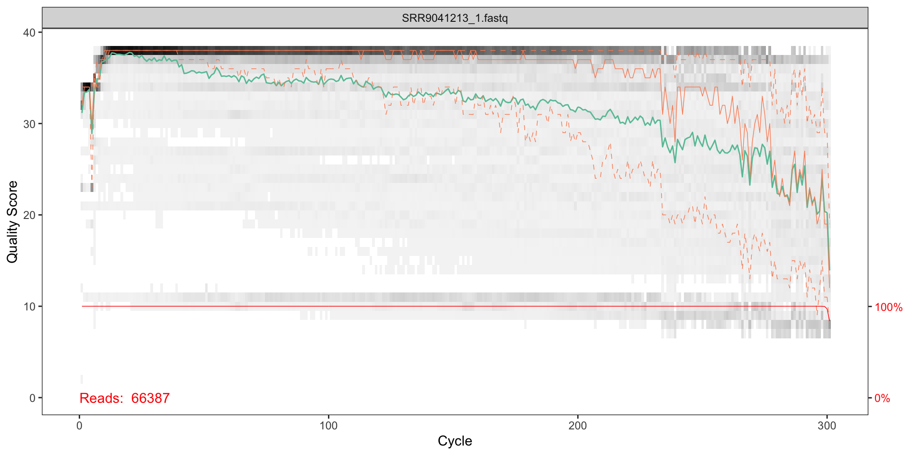
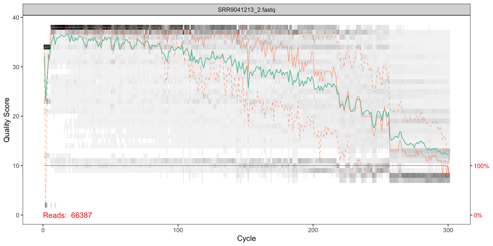
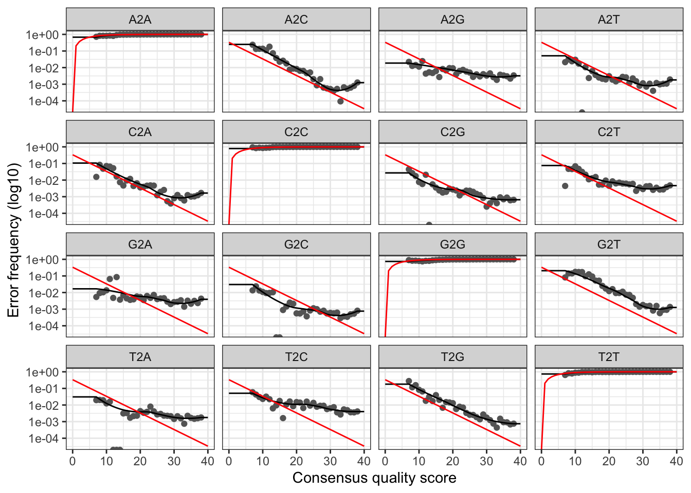
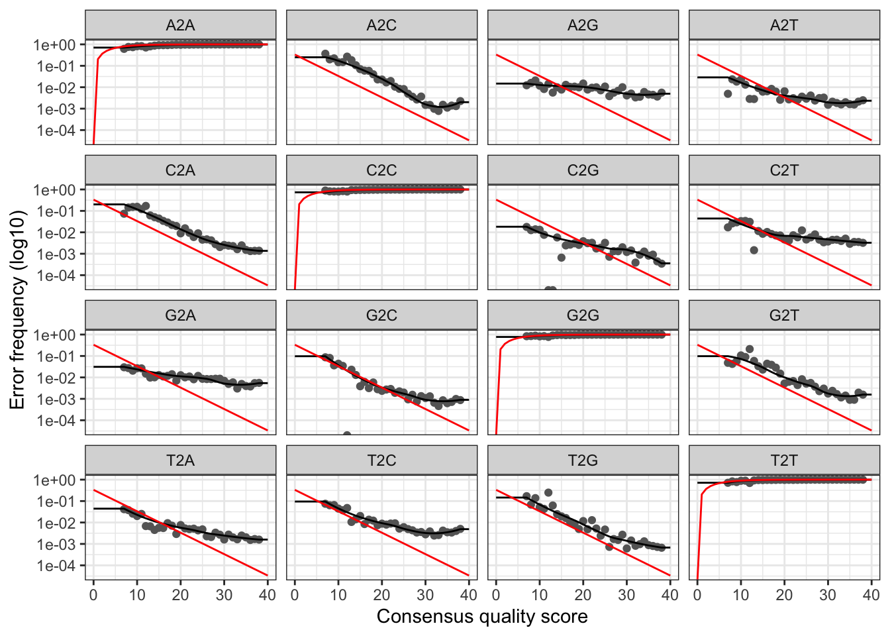
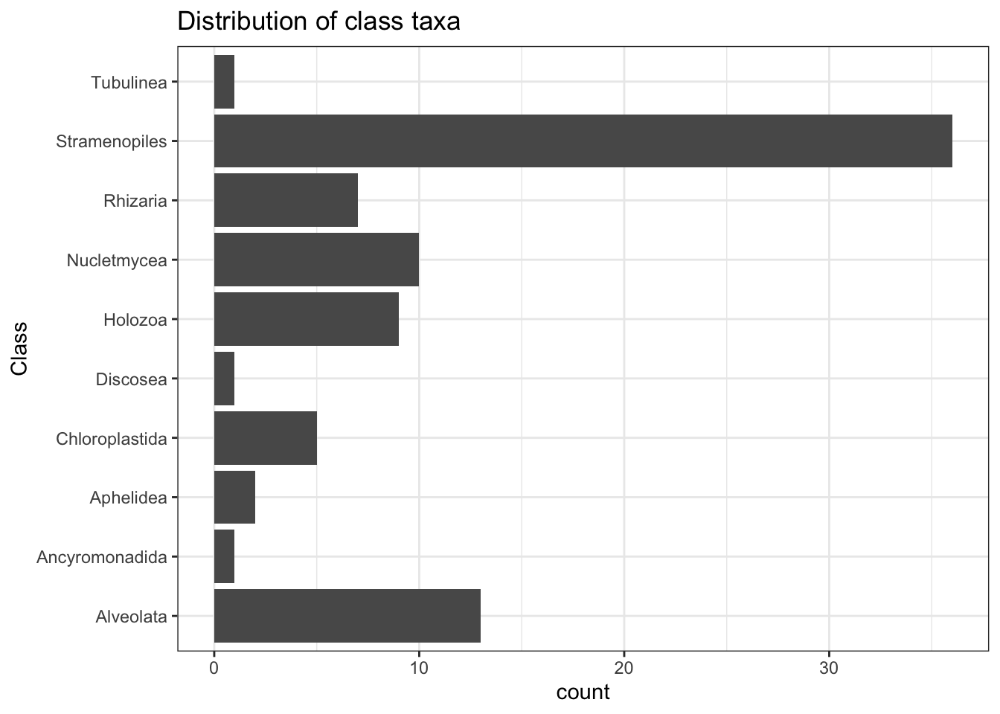

Illumina MiSeq fastq files were downloaded from the NCBI Sequence Read Archive (SRA). The The SRA stores raw sequencing data and alignment information from high-throughput sequencing platforms. For this particular study, demultiplexed reads from from a MiSeq DNA sequencing run were generated from a scientific study of seston DNA (environmental DNA or “eDNA” represented in suspended particulate matter) sampled from an urban watershed of size 42,9994ha in southwestern Ohio, USA. 1
# Load libraries
library(dada2)
packageVersion("dada2")## [1] '1.14.0'fnF1 <- "data_analysis_files/edna_data/fastq_raw_reads/MiSeq/SRR9041213_1.fastq"
fnR1 <- "data_analysis_files/edna_data/fastq_raw_reads/MiSeq/SRR9041213_2.fastq"
filtF1 <- tempfile(fileext=".fastq.gz")
filtR1 <- tempfile(fileext=".fastq.gz")Visualise the quality profiles of the forward reads for the first two fastq files:
# Plot forward read quality
plotQualityProfile(fnF1)
# Plot reverse read qualuty
plotQualityProfile(fnR1)
How should we interpret the plots?
The x axis shows each base position - there are 300 nucleotides in the chart above.
The quality seems to be ok to around 290, so we will trim the last 75 nucleotides from the forward reads.
The reverse reads do not look as good qualoty as the forward reads; there is a significant reduction of quality starting around halfway along the read (around nucleotide 240), so we will trim here.
The study in question produced nearly 100 fastq files, which had a size of 1GB, compressed. Therefore as computing resource was not sufficient to process all of the files, this vignette outlined an approach using just the first two files. Using a server with 16 threads and 16GB of memory on the Amazon Web Services meant the most computationally intensive step (assigning taxonomy using a reference database) took around 20 minutes of wall time. To process the entire set files would require a more powerful server and several hours of wall time to complete.
Now we can parameterise the filtering and trimming of the fastq files (both forward and reverse), and then store the results in a compressed format. A standard set of filtering parameters will be used together the trim lengths we determined from the quality plots.
out <- filterAndTrim(fwd=fnF1, filt=filtF1, rev=fnR1, filt.rev=filtR1,
trimLeft = 10, truncLen=c(290, 240),
maxN=2, maxEE=2,
compress=TRUE, verbose=TRUE)## Read in 66387 paired-sequences, output 28738 (43.3%) filtered paired-sequences.The next thing we want to do is “dereplicate” the filtered fastq files. During dereplication, we condense the data by collapsing together all reads that encode the same sequence, which significantly reduces later computation times.
# Derep forward reads
derepF1 <- derepFastq(filtF1, verbose=TRUE)## Dereplicating sequence entries in Fastq file: /var/folders/pg/1mb4zlkx4xq3fzp3nq_mzrhh0000gn/T//Rtmp2FLQGp/file573646710fa.fastq.gz## Encountered 15108 unique sequences from 28738 total sequences read.# Derep reverse reads
derepR1 <- derepFastq(filtR1, verbose=TRUE)## Dereplicating sequence entries in Fastq file: /var/folders/pg/1mb4zlkx4xq3fzp3nq_mzrhh0000gn/T//Rtmp2FLQGp/file5732a8bc095.fastq.gz## Encountered 17850 unique sequences from 28738 total sequences read.Every amplicon dataset has a different set of error rates. The DADA2 algorithm uses a parametric error model to learn the error rates.
# Learn forward error rates
errF <- learnErrors(derepF1, multithread=TRUE)## 8046640 total bases in 28738 reads from 1 samples will be used for learning the error rates.# Learn reverse error rates
errR <- learnErrors(derepR1, multithread=TRUE)## 6609740 total bases in 28738 reads from 1 samples will be used for learning the error rates.We can visualise the error rates as follows:
# Visualise the forward error rates
plotErrors(errF, nominalQ=TRUE)
# Visualise the reverse error rates
plotErrors(errR, nominalQ=TRUE)
The plots show the error rate for each possible transition. The black line shows the estimated error rates after convergence of the machine-learning algorithm. The red line shows the error rates expected under the nominal definition of the Q-score. In generate, the error rates appear to drop with increased quality.
We can now apply the core DADA2 inference algorithm (inc. ref), to the filtered and trimmed data.
# Apply sample inference to forward data
dadaF1 <- dada(derepF1, err=errF, multithread=TRUE)## Sample 1 - 28738 reads in 15108 unique sequences.# Apply sample inference to reverse data
dadaR1 <- dada(derepR1, err=errR, multithread=TRUE)## Sample 1 - 28738 reads in 17850 unique sequences.print(dadaF1)## dada-class: object describing DADA2 denoising results
## 320 sequence variants were inferred from 15108 input unique sequences.
## Key parameters: OMEGA_A = 1e-40, OMEGA_C = 1e-40, BAND_SIZE = 16The core DADA2 algorithm corrects Illumina-sequenced amplicon errors, and can resolve variants by as little as one nucleotide2.
We can now merge the forward and reverse reads together to obtain the full denoised sequences. Merging is performed by aligning the denoised forward reads with the reverse-complement of the corresponding denoised reverse reads, and then constructing the merged “contig” sequences. By default, merged sequences are only output if the forward and reverse reads overlap by at least 12 bases, and are identical to each other in the overlap region.
Paired reads that did not exactly overlap are removed by mergePairs, further reducing spurious output.
# Merge pairs
merger1 <- mergePairs(dadaF1, derepF1, dadaR1, derepR1, verbose=TRUE)## 24607 paired-reads (in 213 unique pairings) successfully merged out of 27591 (in 797 pairings) input.# Inspect the merger data.frame from the first sample
head(merger1[[1]])## [1] "AAGATTAAGCCATGCATGTCTAAGTATAAACTGCTTATACTGTGAAACTGCGAATGGCTCATTAAATCAGTTATAGTTTATTTGATGGTACCTACTACACGGATAACCGTAGTAATTCTAGAGCTAATACGTGCGTAAATCCCGACTCCTGGAAGGGACGTATTTATTAGATTTAAGGCCAACCGAGCTTGCTCGTCTCATGGTGAATCATGATAACTTTACGAATCGCATGGCCTTGCGCCGGCGATGTTTCATTCAAATTTCTGCCCTATCAATTGGCGATGGTAGGATAGAGGCCTACCATGGTGGTAACGGGTGACGGGGAATTAGGGTTCGATTCCGGAGAGGGAGCCTGAGAAACGGCTACCACATCCAAGGAA"
## [2] "AAGATTAAGCCATGCATGTCTAAGTATAACCATTATACAGGAAAACTGCGAACGGCTCATTATATCAGTTATTGTTTCTTTGATAGTCCCTTACTACTTGGATACCTGTAGTAATTCTAGAGCTAATACATGCATCAATACCCGACTTCTGGAAGGGTAGTATTTATTAGGTTTAAACCAACACCCCTCGGGGTTGCTTTGGTGATTCATAATAACTTATCGGATCGCATGGCTCCACGCCGGCGATGGATCATTCAAGTTTCTGCCCTATCAGTTTTGGTTGGGAGTGTATTGGACTCCCAAGACTTTGACGGGTAACGAATTGTTAGGGCAAGATTTCGGAGAGGGAGCCTGAGAGACGGCTACCACATCCAAGGAA"
## [3] "AAGATTAAGCCATGCATGTCTAAGTATAACCATTATACAGGAAAACTGCGAACGGCTCATTATATCAGTTATTGTTTCTTTGATAGTCCCTTACTACTTGGATACCTGTAGTAATTCTAGAGCTAATACATGCATCAATACCCGACTGTTCGCGGAAGGGTAGTATTTATTAGGTATAGACCAACCGTCTTCGGACGTGCTTTGGTGATTCATAATAACTTATCGGATCGCATGGCTCCATGCCGGCGATGGATCATTCAAGTTTCTGCCCTATCAGCTTTGGATGGTAGTGTATTGGACTACCATGGCTTTAACGGGTAACGAATTGTTAGGGCAAGATTTCGGAGAGGGAGCCTGAGAGACGGCTACCACATCCAAGGAA"
## [4] "AAGATTAAGCCATGCATGTCTAAGTATAACCATTATACAGGAAAACTGCGAACGGCTCATTATATCAGTTATTGTTTCTTTGATAGTCCCTTACTACTTGGATACCTGTAGTAATTCTAGAGCTAATACATGCATCAATACCCGACTTCTGGAAGGGTAGTATTTATTAGGTTTAAACCAACACCCCTCGGGGTTGCTTTGGTGATTCATAATAACTTATCGGATCGCATGGCTCCATGCCGGCGATGGATCATTCAAGTTTCTGCCCTATCAGTTTTGGTTGGGAGTGTATTGGACTCCCAAGACTTTGACGGGTAACGAATTGTTAGGGCAAGATTTCGGAGAGGGAGCCTGAGAGACGGCTACCACATCCAAGGAA"
## [5] "AAGATTAAGCCATGCATGTCTAAGTATAACCATTATACAGGAAAACTGCGAACGGCTCATTATATCAGTTATTGTTTCTTTGATAGTCCCTTACTACTTGGATACCTGTAGTAATTCTAGAGCTAATACATGCATCAATACCCGACTTCTGGAAGGGTAGTATTTATTAGGTATAGACCAACACCCTTCGGGGTTGCTTTGGTGATTCATAATAACTAATCGGATCGCATGGCTCCATGCCGGCGATGGATCATTCAAGTTTCTGCCCTATCAGTTTTGGTTGGGAGTGTATTGGACTCCCAAGACTTTGACGGGTAACGAATTGTTAGGGCAAGATTTCGGAGAGGGAGCCTGAGAGACGGCTACCACATCCAAGGAA"
## [6] "AAGATTAAGCCATGCACGTCTAAGTATAAGCGATTATACTGTGAAACTGCGAATGGCTCATTATATCAGTTATAGTTTATTTGATGGTCCTTGCTACTTGGATAACCGTAGTAATTCTAGAGCTAATACATGCATAAATCCCCGACTGCTTGGAAGGGGTGTATTTATTAGATGGAAACCAATTCGGGGCAACCCGGTTCATGGTGATTCATAATAACTTTCGGATCGACAGCAATGTCGATGCATCATTCAAGTTTCTGCCCTATCAGTTGTGGATGGTAGGGTATTGGCCTACCATGACTTTAACGGGTAACGGAGAATTAGGGTTCGATTCCGGAGAGGGAGCCTGAGAAATGGCTACCACATCCAAGGAA"We can now construct an amplicon sequence variant table (ASV) table, a higher-resolution version of the OTU table produced by traditional methods. The sequence table is a matrix with rows corresponding to (and named by) the samples, and columns corresponding to (and named by) the sequence variants.
# Generate sequence table
seqtab <- makeSequenceTable(merger1)
# Sequence table dimensions
dim(seqtab)## [1] 1 213# Inspect distribution of sequence lengths
table(nchar(getSequences(seqtab)))##
## 311 329 339 340 346 350 352 353 356 357 362 363 365 366 367 368 369 370
## 1 1 2 2 1 1 1 1 1 1 1 5 3 3 1 4 6 9
## 371 372 373 374 375 376 377 378 379 380 381 382 383 384 385 386 387 388
## 4 1 5 12 5 1 5 5 31 14 15 27 11 8 10 1 2 1
## 389 391 392 395 397 399 410 429
## 4 1 1 1 1 1 1 1The table contains 213 ASVs from processing the two initial fastq amplicon files.
merger1.nochim <- removeBimeraDenovo(merger1, multithread=FALSE, verbose=TRUE)## Identified 30 bimeras out of 213 input sequences.We can track the number of reads that made it through each step in the pipeline:
getN <- function(x) sum(getUniques(x))
track <- cbind(out,
getN(dadaF1),
getN(dadaR1),
getN(merger1),
getN(merger1.nochim))
# If processing a single sample, remove the sapply calls: e.g. replace sapply(dadaFs, getN) with getN(dadaFs)
colnames(track) <- c("input", "filtered", "denoisedF", "denoisedR", "merged", "nonchim")
track## input filtered denoisedF denoisedR merged nonchim
## SRR9041213_1.fastq 66387 28738 28042 28132 24607 23419Doesn’t look to hot! Maybe we truncated too much towards the start?
Now we have our ASVs we can use the function assignTaxonomy to classify the against a reference database. This function uses a naive Bayesian classfier3 to match ASVs against a set of sequences within a reference taxonomic database. For the assignment given below we use the SILVA species-level training set4 that contains species typically found within microbiomes. This is clustered at 99% similarity.
taxa <- assignTaxonomy(
# Sequences to be assigned
merger1.nochim,
# Reference fasta database - 18S ribosomal DNA
"data_analysis_files/edna_data/silva/silva_132.18s.99_rep_set.dada2.fa.gz",
# Make multithreaded
multithread=TRUE,
# Print status
verbose = TRUE
)Now let’s look at the results of the taxonomic assignment.
library(dplyr)
# Removing sequence rownames for display only
taxa_df <- unname(taxa) %>% as.data.frame()
names(taxa_df) <- c('Kingdom','Phylum','Class','Order','Family','Genus','Species')
# First few rows of results
head(taxa_df)## Kingdom Phylum Class Order Family
## 1 Eukaryota Archaeplastida Chloroplastida Chlorophyta Chlorodendrales
## 2 Eukaryota SAR Stramenopiles Ochrophyta Mediophyceae
## 3 Eukaryota SAR Stramenopiles Ochrophyta Mediophyceae
## 4 Eukaryota SAR Stramenopiles Ochrophyta Mediophyceae
## 5 Eukaryota SAR Stramenopiles Ochrophyta Mediophyceae
## 6 Eukaryota SAR Stramenopiles Ochrophyta Chrysophyceae
## Genus Species NA
## 1 Tetraselmis <NA> <NA>
## 2 Cyclotella <NA> <NA>
## 3 Thalassiosira <NA> <NA>
## 4 Cyclotella <NA> <NA>
## 5 Cyclotella <NA> <NA>
## 6 uncultured uncultured_freshwater_eukaryote AB622299.1.1685# PlotAs the reference database was for Eurkarytes all of our assign results are eukaryota. We can see that a number of Phyla have resolved to the SAR supergorup; this is a clade of eukaryotes that includes the classes stramenopiles, alveolates and Rhizaria (hence SAR). Most taxa assignments only resolve ultimately to family or genus.
We can plot a chart to show the distribution of taxa at the Class order. Stramenopiles are clearly the must prevelant class that was resolved. This class are algae, ranging from multicellular kelp to unicellular diatoms, which are a primary component of plankton.
taxa_df[1:7] %>%
na.omit() %>%
ggplot(aes(Class)) +
geom_bar() +
coord_flip() +
theme_bw()
High-throughput environmental DNA analysis informs a biological assessment of an urban stream↩
Callahan BJ, McMurdie PJ, Rosen MJ, Han AW, Johnson AJA, Holmes SP (2016). “DADA2: High-resolution sample inference from Illumina amplicon data.” Nature Methods, 13, 581-583. doi: 10.1038/nmeth.3869 (URL: https://doi.org/10.1038/nmeth.3869).↩
Qiong Wang, Naıve Bayesian Classifier for Rapid Assignment of rRNA Sequences into the New Bacterial Taxonomy (2007). APPLIED AND ENVIRONMENTAL MICROBIOLOGY, Aug. 2007, p. 5261–5267. https://www.ncbi.nlm.nih.gov/pmc/articles/PMC1950982/↩
Morien, Evan, & Parfrey, Laura W. (2018). SILVA v128 and v132 dada2 formatted 18s ‘train sets’ (Version 1.0) [Data set]. Zenodo. http://doi.org/10.5281/zenodo.1447330↩